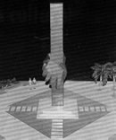

Voluntário ganha monumento Voluntário ganha monumento
Projeto do Rotary Club será erguido na Arena
Os Rotary Clubes joinvilenses apresentaram nesta semana o Projeto Monumento ao Voluntário, que será erguido na Arena Joinville. No dia 5 de dezembro, Dia Internacional do Voluntário, os rotarianos vão lançar a pedra fundamental, com um culto ecumênico. Segundo o presidente da comissão pró-construção do Monumento do Voluntário, Fabian Radloff, a inauguração está programada para o dia 23 de fevereiro do ano que vem. quando o Rotary Internacional completa 100 anos.
O presidente destaca que o objetivo da obra é reconhecer e homenagear o trabalho voluntário, difundir a cultura do voluntariado, oferecer opções a quem quer ajudar e não sabe como, além de promover um "padrão de voluntariado Rotary", de real valor social, fomentando parcerias sociais. "Pretendemos estimular o engajamento dos joinvilenses, consolidando a parceria entre Rotary e comunidade", avisa Radloff.
De acordo com ele, a obra vai ser um marco inspirador de trabalhos sociais. Para isso, destaca, os Rotaries prestarão assessoria a projetos a serem implantados e ajudará no desenvolvimento deles. "Temos uma comissão que receberá da comunidade os projeios. Então, eles irão estudar e auxiliar os voluntários na busca de recursos, até alavancar o trabalho. Mas o mais importante é que vamos usar nosso conhecimento com voluntariado para que o projeto tenha continuidade", diz.
Com esses tipos de ações, os rotarianos buscam separar o voluntariado de real valor social daquele meramente promocional. Radioff acredita que, com a inauguração do monumento, os projetos devem começar a sair do papel.
O Monumento ao Voluntariado terá 16.2 metros de altura e será representado por duas mãos unidas, simbolizando a solidariedade ao próximo. A obra está orçada em aproximadamente R$ 120 mil. A captação de recursos está sendo feita com parcerias entre a iniciativa privada e órgãos governamentais, sindicatos, fundações, entre outros. O custo do monumento será dividido em colas de patrocínios. O patrocinador terá o nome de sua empresa inserido na placa de homenagem aos apoiadores do projeto.
(Poliana Santos)
Monumento será representado por duas mãos unidas
Solidariedade garante título a Joinville O projeto que reconhece Joinville como a Capital Catarinense do Voluntariado, elaborado pela deputada estadual Simone Schramm (PMDB), foi aprovado quarta-feira na Assembleia Legislativa, O trabalho voluntário em serviços públicos é uma oportunidade de compreensão e exercício do conceito de cidadania e um elemento de qualificação e ampliação das iniciativas governamentais, desde que as instituições e os programas beneficiados estejam devidamente esclarecidos quanto à missão e organizados para seu desempenho", ressaltou Simone. Em Joinville, uma em cada 20 pessoas trabalha ativamente como voluntário e está ligada a alguma associação ou entidade que presta serviço à comunidade.
(A NOTICIA - Joinville/SC – GERAL - Sábado, 20/11/2004)
|